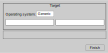

`console source /home/user/workspace/lwip.app/PikeOS.sh cd ../forte-incubation cmake-gui`
Setting Up 4diac FORTE for Posix PikeOS 5.x
This instruction assumes you have a Linux system with a PikeOS 5.x installation and a CODOE installation matching to the installed PikeOS
Version.
(CODEO is the Eclipse-based IDE for developing PikeOS projects shipped with the PikeOS product.)
Also CMAKE and CMAKE-GUI are installed.
Assuming you are familiar with PikeOS basics explained in the "pikeos-tutorial.pdf".
Assuming you have a CODEO workspace with 4 projects:
-
/home/user/workspace + CODEO workspace
-
üóÅ pool
"CUSTOM POOL" for all PikeOS Projects
-
üóÅ forte-incubation
4diac FORTE source code
Imported project using CODEOs (Eclipse) import wizard (
File → Import → General → Projects from Folder or Archive). After importing the project was renamed to "forte-incubation".The import source may be a cloned git repository (
git://git.eclipse.org/gitroot/4diac/org.eclipse.4diac.forte.git) or the ZIP-File "4diac FORTE Source" downloaded from eclipse.org/4diac. -
üóÅ lwip.app
PikeOS 5.x Application Project of type Posix Project / lwip-build.
-
üóÅ forteserver.int
PikeOS 5.x Integration Project of type Integration Project / devel-posix.
-
Patching "lwip.app"
The lwip.app application project will build a library (iblwip.a) that is required by 4diac FORTE.
So we will abuse this project to build 4diac FORTE (binary name: forte) together with iblwip.a.
Apply patch forte-incubation/src/arch/pikeos_posix/lwip.patch to the lwip.app.
This will adapt the Makefile and the lwip.app/lwipopts.h file as required for building 4diac FORTE.
Patching lwip.app/lwipopts.h enables multicast which 4diac FORTE uses when multiple instances are communicating with each other.
In addition, a folder lwip.app/4diac-forte.
This folder will be used by the forte-incubation project to store the required source and Make-files into for building the forte binary.
Running CMAKE for "forte-incubation"
The "PikeOS Posix" target of the forte-incubation project needs the environment variables exported by lwip.app/PikeOS.sh.
Open a shell (e.g. on selecting lwip.app in CODEO and pushing [.kbd] ⇧ + [.kbd] Alt + [.kbd] W and selecting Terminal) and
execute:
Alternatively, you can:
-
Right-click on "forte-incubation" project and select "Properties".
-
Select "C/C++-Build" and click on "Manage Configurations…​"
-
Rename "RELEASE" to "CMAKE", remove all other existing configurations and press the "OK" button.
-
Uncheck "Use default build command" and set it to:
bash -c "source $\{workspace_loc:/lwip.app/PikeOS.sh}; cd $\{workspace_loc:/forte-incubation}; cmake-gui -
Uncheck "Generate Makefiles automatically" and set "Build directory" to:
$\{workspace_loc:/forte-incubation}/ -
Now you can run CMAKE-GUI by right-click on "forte-incubation" project and selecting "Build Project"
CMAKE-GUI shows a dialog.
First set forte-incubation as source folder and lwip.app binary folder:
Push Configure and select "Unix Makefiles" and "Specify options for cross-compiling":
Push Next, set "Operating System" to "Generic" and leave all other fields blank.

After that press Finish which will occur an expected error dialog.
Close the dialog and set parameter FORTE_ARCHITECTURE to PikeOS_Posix.
Push Configure twice. Now no error should be present any more. This means that no parameter is highlighted with light-red color any more.
Building "forte" binary for PikeOS
In the lwip.app project Make-target "all" will build lwip.a together with the forte binary. Make-target "install" additionally will copy forte to $PIKEOS_CUSTOM_POOL_DIR/posix.
PikeOS Integration Project "forteserver.int"
Select posix-devel/Application/Posix Process and change Host file to CUSTOM_POOL/posix/forte.
Now click the Add…​ button (under the Project Structure heading), add template posix / lwIP Ethernet interface to Posix Process and configure it:
| Key | Value | Example for QEMU with Usermode NW | Example for QEMU with TUN/TAP NW |
|---|---|---|---|
Interface Address |
e.g. MUXA Target IP +1 |
10.0.2.16 |
192.168.0.3 |
Netmask |
255.x.x.x |
255.255.255.0 |
255.255.255.0 |
Gateway address |
Gateway in target NW to reach the host |
10.0.2.2 |
192.168.0.1 |
The Project looks like this:
-
posix-devel
-
▢ Application
-
◘ POSIX Partition
-
◙ POSIX Process
-
…​ lwIP Ethernet …​
-
-
▢ Default
-
▢ Development Tools
-
▢ qemu-…​
-
Assuming we use QEMU with user mode network.
This will let 4diac FORTE run on 10.0.2.16:61499 as 61499 is 4diac FORTE’s default port.
|
Note
|
If you want to use a different port you have to add template posix / Environment variables to Posix Process (similar behavior like adding posix / lwIP Ethernet interface).
Parameter -c IP:PORT will start 4diac FORTE on an other port.
|
Right-click on POSIX Partition and click "copy".
Right-click on Application and click on insert.
Rename "partition name" and "partition id" eg. to "posix2" and "3" as they have to be unique.
Repeat this procedure for POSIX Process.
-
Click on
POSIX Partition (2)and assign processPOSIX Process (2). -
Click on
POSIX Process (2) / …​ lwIP Ethernet …​and changeDEPEND: LWIPDEVICE_IFto…​-vchan2. -
Configure
POSIX Process (2) / …​ lwIP Ethernet …​:
| Key | Value | Example for QEMU with Usermode NW | Example for QEMU with TUN/TAP NW |
|---|---|---|---|
Interface Address |
e.g. "POSIX Process" +1 |
10.0.2.17 |
192.168.0.4 |
Netmask |
255.x.x.x |
255.255.255.0 |
255.255.255.0 |
Gateway address |
Gateway in target NW to reach the host |
10.0.2.2 |
192.168.0.1 |
Now the project looks like this:
-
posix-devel
-
▢ Application
-
◘ POSIX Partition
-
◙ POSIX Process
-
◘ POSIX Partition (2)
-
◙ POSIX Process (2)
-
-
▢ Default
-
▢ Development Tools
-
◙ muxa
-
channels
-
-
-
▢ qemu-…​
-
▢ Monitor Kernel Drivers
-
▢ …​ Serial User Level Driver
-
▢ …​ Ethernet User Level Driver
-
▢ …​-net-device
-
▢ …​-net-vchan0
-
▢ …​-net-vchan1
-
▢ …​-net-vchan2
-
▢ …​-net-vchan3
-
-
-
Open Development Tools / muxa / channels and delete the assignment of "POSIX Process (2)". Rename channel 4 to e.g. "posix2-stdio".
Assign "POSIX Process (2)" to this channel.
Go to qemu-…​ / …​ Ethernet User Level Driver and set "Enable Multicast Communication" to true for …​-net-device, …​-net-vchan0 and …​-net-vchan1.
Now you are able to test the partitions by starting QEMU and perform the 4DIAC-step-by-step tutorial.
On using user mode network you have to start QEMU by selecting "Start QEMU with custom commandline" and defining portforwarding:
-net user,hostfwd=udp::21500-:1500,hostfwd=tcp:127.0.0.1:61499-10.0.2.16:61499,hostfwd=tcp 127.0.0.1:61500-10.0.2.17:61499,host=10.0.2.2,net=10.0.2.0/255.255.255.0
"Start QEMU with custom commandline" does not overwrite "muxa.xml"s Target IP and port as it would be by selecting "Start QEMU with user mode network". This Make-target stub allows to adapt the generated "muxa.xml" to user mode networking:
make boot: all $(eval HOSTIP := 127.0.0.1) $(eval TARGETPORT := 21500) @sed -ie "s/^.*TargetIP.*$$/ <Parameter Name=\"TargetIP\" Value=\"$(HOSTIP)\"\/>/" muxa.xml @sed -ie "s/^.*HostIP.*$$/ <Parameter Name=\"HostIP\" Value=\"$(HOSTIP)\"\/>/" muxa.xml @sed -ie "s/^.*TargetPort.*$$/ <Parameter Name=\"TargetPort\" Value=\"$(TARGETPORT)\"\/>/" muxa.xml